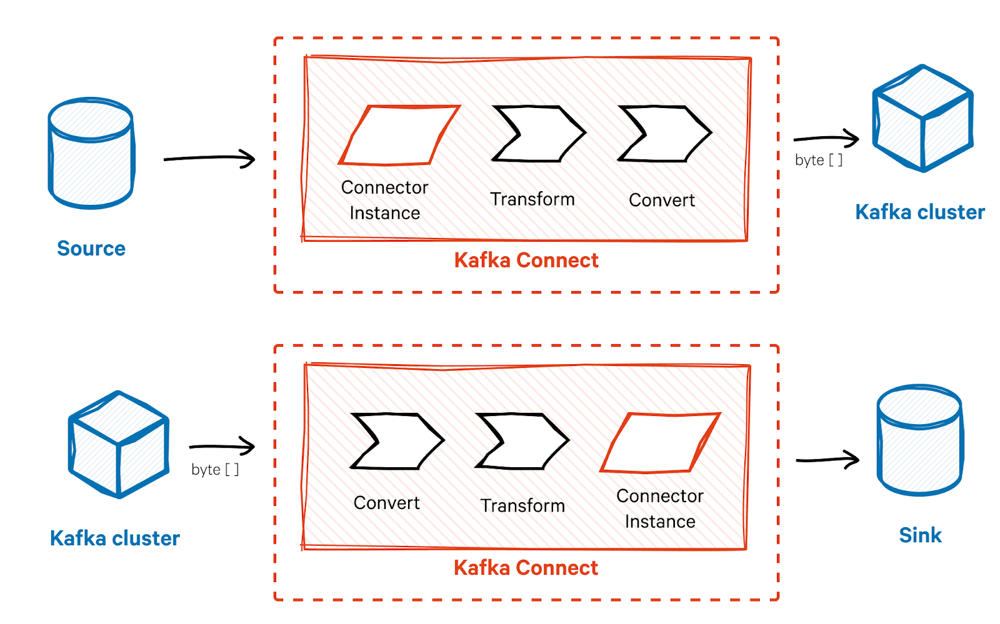
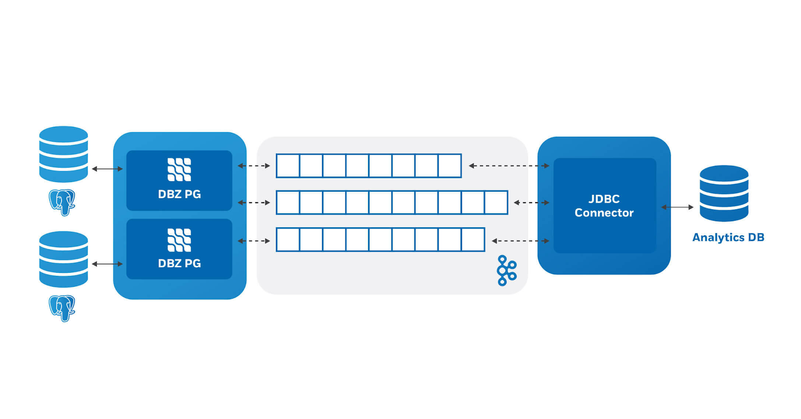
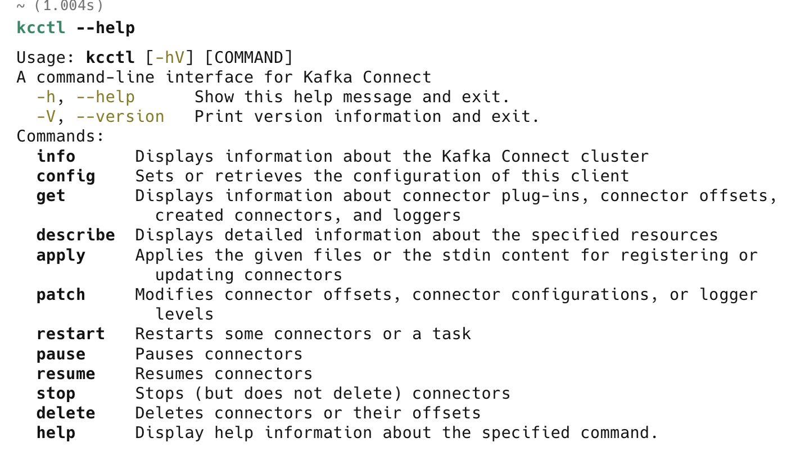

Kafka Connect
Kafka Connect — open-source инструмент, который позволяет переносить данные между Kafka1 и другими системами в формате real-streaming2.
В эпоху BigData real-streaming стал очень востребованным для аналитики, благодаря чему Kafka и Kafka Connect появились и стали набирать популярность. Сейчас крайне редко можно увидеть вакансию на специалиста, работающего с данными, где в требуемых технологиях не будет Kafka.
Kafka Connect состоит из двух видов коннекторов:
- Source Connector — коннектор, который пишет в Kafka из внешнего источника данных.
- Sink Connector — коннектор, который пишет во внешний источник данных из Kafka.

Debezium

Debezium (в разговоре “дебез”) — коннекторы, позволяющие читать изменения данных (CDC)3 в режиме real-stream. Как правило, это источники под протоколом JDBC4.
PostgreSQL
Ниже пункты будут касаться работы СУБД PostgreSQL с Debezium. Решения были выявлены опытным путем и необязательно являются стопроцентными.
Настройка источника перед репликацией
Перед началом репликации из PostgreSQL нужно выполнить следующие действия:
-
max_slot_wal_keep_sizeзадаёт лимит WAL, который держится для репликационных слотов (в МБ). Если лимит превышен, слот могут выключить, а старые WAL удалятся. Значение-1— без лимита, и при отсутствии читателя WAL может разрастись до заполнения диска. Отдельно проверьmax_wal_size: это порог для чекпойнта, а не жёсткий лимит WAL. Он не остановит рост WAL при сильном отставании слота, но влияет на частоту чекпойнтов и переработку сегментов. - Создать публикацию и добавить туда необходимые таблицы.
CREATE PUBLICATION <publication_name> FOR TABLE
<table1>,
<table2>,
…
<tableN>;-
(опционально) Настроить
Replica Identity— оно отвечает за то, какие события отправлять и насколько глубоко.
Replica Identity:
DEFAULT — отправляет create, update, delete, но в UPDATE только новое значение (без old state).
FULL — как DEFAULT, но включает предыдущее состояние (старые значения строк).
INDEX — использует уникальный индекс, указанный для репликации (минимальный набор ключей).
NOTHING — в UPDATE/DELETE не передает ключи строки (обычно не подходит для CDC).
ALTER TABLE <table> REPLICA IDENTITY FULL;- Создать
heartbeatтаблицу.
CREATE TABLE IF NOT EXISTS debezium.heartbeat(
id INT,
last_update TIMESTAMPTZ DEFAULT current_timestamp,
CHECK (id=1), PRIMARY KEY (id)
);В этом случае всегда одна запись, у которой будет меняться поле last_update.
- Создать сигнальную таблицу.
CREATE TABLE IF NOT EXISTS debezium.signal(
id VARCHAR(42) PRIMARY KEY,
type VARCHAR(32) NOT NULL,
data VARCHAR(2048) NULL
);Потеря сетевой связности
Это проблема номер один: Debezium-коннектор чаще всего падает из-за этого. Чтобы это предотвратить, достаточно перезагрузить коннектор при условии, что сетевая связность восстановилась. По умолчанию коннектор не перезапускается после падения, чтобы он пытался перезапускаться, нужно настроить следующие параметры:
"errors.log.enable": true,
"errors.log.include.messages": true,
"errors.max.retries": 15,
"errors.retry.delay.initial.ms": 1000,
"errors.retry.delay.max.ms": 10000,
"errors.retry.timeout": -1,
"errors.tolerance": "none",TOAST столбец
Если вы работали с репликацией таблиц, в которых есть столбец с очень большим значением (чаще всего JSON), скорее всего встречались со значением debezium_unavailable_value.
Если коротко, то решается просто:
ALTER TABLE <schema>.<table> REPLICA IDENTITY FULL
Но в этом случае размер WAL увеличится в два раза, перед этим проверьте параметры
max_slot_wal_keep_size и max_wal_size.
Если что, решение с этой статьи у меня не взлетело — привело к росту WAL и потере репликационного слота.
Гарантия корректной работы коннектора
Чтобы гарантировать корректную работу коннектора, статуса “Running” недостаточно, так как может быть так: статус зеленый, но репликация не работает. Гарантом здесь выступает heartbeat-топик, который N раз в минуту пишет в топик, то есть нужно проверять свежесть сообщений (можно использовать Grafana).
Параметры, которые отвечают за настройку heartbeat:
"heartbeat.action.query": "INSERT INTO debezium.heartbeat(id) VALUES(1) ON CONFLICT(id) DO UPDATE SET last_update=now();",
"heartbeat.interval.ms": 10000В этом случае каждые 10 секунд в heartbeat-топик будет записываться сообщение, при отсутствии сообщений больше чем 5 минут — можно бить тревогу.
Бэкфиллинг
Часто бывает, что появилась возможность перезагрузить таблицу или какой-то интервал. Самый легкий и быстрый способ — использовать сигналы. Чтобы использовать их, нужно создать таблицу (DDL выше). И указать следующие параметры:
{
"signal.consumer.sasl.jaas.config": "org.apache.kafka.common.security.scram.ScramLoginModule required username='secret' password='secret';",
"signal.consumer.sasl.mechanism": "SCRAM-SHA-512",
"signal.consumer.security.protocol": "SASL_SSL",
"signal.consumer.ssl.truststore.location": "path_to_certificate",
"signal.consumer.ssl.truststore.type": "PEM",
"signal.data.collection": "debezium.signal",
"signal.enabled.channels": "source,kafka",
"signal.kafka.bootstrap.servers": "server1:9090,server2:9090,server3:9090",
"signal.kafka.topic": "<service_name>.signal_topic"
}После этого в сигнальный топик <service_name>.signal_topic отправить сообщение:
{
"type": "execute-snapshot",
"data": {
"data-collections": [
"public.table1",
"public.table2"
],
"type": "INCREMENTAL",
"additional-conditions": [
{
"data-collection": "public.table1",
"filter": "updated_at BETWEEN '2026-03-20 16:00:00' AND '2026-03-20 18:00:00'"
}
]
}
}БОНУС: CLI для управления коннекторами
В качестве крутой находки хочу поделиться инструментом, с которым можно легко управлять коннекторами Kafka Connect — kcctl.

В kcctl можно менять конфиги сразу в нескольких коннекторах с помощью регулярных выражений в названии коннектора, смотреть статусы коннекторов, создавать коннекторы. Мне кажется, это удобнее, чем использовать REST API или UI (если это касается каких-то манипуляций, а не просмотра).
Сноски
- Kafka — open-source распределенная платформа, предназначенная для обмена сообщениями в реальном времени. ↩
- real-streaming — потоковая передача данных в реальном времени. ↩
- CDC — Change Data Capture — захват изменений данных, в каждом источнике реализован по-разному, например, PostgreSQL пишет изменения данных в WAL-лог. Основные плюсы CDC — чтение не напрямую из таблицы, что сильно снижает нагрузку на базу и повышает консистентность, так как в качестве изменения пишутся все операции CRUD (create, update, delete). ↩
- JDBC — Java Database Connectivity — единый интерфейс для взаимодействия с источниками данных, такими как MySQL, PostgreSQL и т. д. ↩